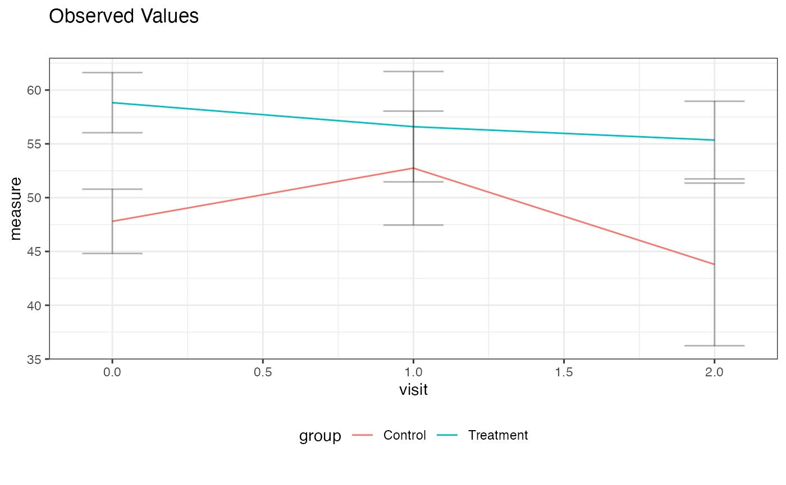
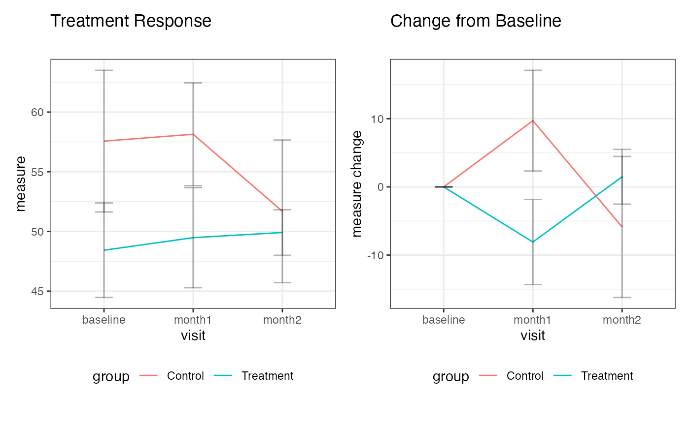
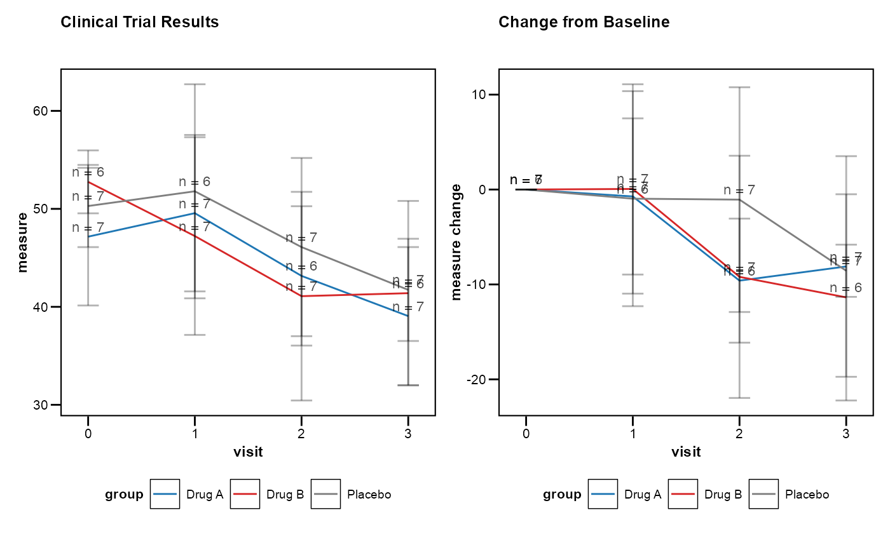

Generates flexible plots for longitudinal data, showing either observed values, change from baseline, or both. Supports grouping and faceting.
Usage
lplot(
df,
form,
facet_form = NULL,
cluster_var = "subject_id",
baseline_value = "baseline",
xlab = "visit",
ylab = "measure",
ylab2 = "measure change",
title = "Observed Values",
title2 = "Change from Baseline",
subtitle = "",
subtitle2 = "",
caption = "",
caption2 = "",
plot_type = "obs",
error_type = "bar",
color_palette = NULL,
clinical_mode = FALSE,
treatment_colors = NULL,
confidence_interval = NULL,
show_sample_sizes = FALSE,
visit_windows = NULL,
theme = NULL,
publication_ready = FALSE,
statistical_annotations = FALSE,
reference_lines = NULL
)Arguments
- df
A data frame containing the data to be plotted.
- form
A formula specifying the variables for the x-axis, grouping, and y-axis. Format:
y ~ x | group.- facet_form
A formula specifying the variables for faceting. Format:
facet_y ~ facet_x. Default isNULL.- cluster_var
A character string specifying the name of the cluster variable for grouping within subjects (typically a participant or subject ID).
- baseline_value
The baseline value of the x variable, used to calculate changes. For categorical x variables, this is treated as a level. For continuous x variables, this is treated as a numeric value.
- xlab
Label for the x-axis.
- ylab
Label for the y-axis of the observed values plot.
- ylab2
Label for the y-axis of the change values plot.
- title
Title for the observed values plot.
- title2
Title for the change values plot.
- subtitle
Subtitle for the observed values plot.
- subtitle2
Subtitle for the change values plot.
- caption
Caption for the observed values plot.
- caption2
Caption for the change values plot.
- plot_type
Type of plot to return. Options are
"obs"(observed values),"change"(change values), or"both"for combined plots.- error_type
Type of error representation. Options are
"bar"for error bars (vertical lines showing standard error) or"band"for error ribbons (shaded areas around the line).- color_palette
Optional vector of colors to use for groups. If NULL, default ggplot colors are used.
- clinical_mode
Logical. If TRUE, enables clinical trial defaults (95% CI, sample sizes, clinical colors). Default is FALSE.
- treatment_colors
Character. Predefined color scheme for treatments. Options: "standard" (placebo=grey, active=colors), or NULL.
- confidence_interval
Numeric. Confidence level for error bounds (e.g., 0.95 for 95% CI). If NULL, uses standard error.
- show_sample_sizes
Logical. If TRUE, shows sample sizes at each timepoint.
- visit_windows
List. Named list defining visit windows for grouping (e.g., list("Week 4" = c(22, 35))).
- theme
Character. Predefined theme for regulatory compliance ("fda", "ema", or NULL for default).
- publication_ready
Logical. If TRUE, applies publication-ready defaults (professional theme, proper typography, clean styling).
- statistical_annotations
Logical. If TRUE, adds p-values and significance indicators to the plots.
- reference_lines
List of reference line specifications. Each should be a list with 'value', 'axis' ("x"/"y"), 'color', 'linetype', etc.
Examples
# Example with continuous x variable
df <- data.frame(
subject_id = rep(1:10, each = 3),
visit = rep(c(0, 1, 2), times = 10),
measure = rnorm(30, mean = 50, sd = 10),
group = rep(c("Treatment", "Control"), length.out = 30)
)
# Plot observed values by visit and group
lplot(df, measure ~ visit | group, baseline_value = 0,
cluster_var = "subject_id")

# Example with categorical x variable
df2 <- data.frame(
subject_id = rep(1:10, each = 3),
visit = rep(c("baseline", "month1", "month2"), times = 10),
measure = rnorm(30, mean = 50, sd = 10),
group = rep(c("Treatment", "Control"), length.out = 30)
)
# Plot both observed and change values
lplot(df2, measure ~ visit | group, baseline_value = "baseline",
cluster_var = "subject_id", plot_type = "both",
title = "Treatment Response", title2 = "Change from Baseline")

# Clinical trial example with CDISC variables
clinical_data <- data.frame(
USUBJID = rep(paste0("001-", sprintf("%03d", 1:20)), each = 4),
AVISITN = rep(c(0, 1, 2, 3), times = 20),
AVAL = rnorm(80, mean = c(50, 48, 45, 42), sd = 8),
TRT01P = rep(c("Placebo", "Drug A", "Drug B"), length.out = 80)
)
# Clinical mode with automatic CDISC handling
lplot(clinical_data, AVAL ~ AVISITN | TRT01P,
cluster_var = "USUBJID", baseline_value = 0,
clinical_mode = TRUE, plot_type = "both",
title = "Clinical Trial Results")
